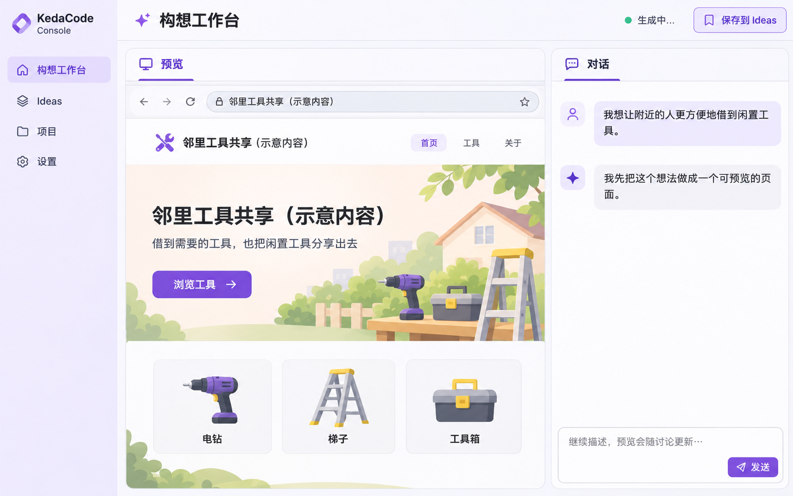
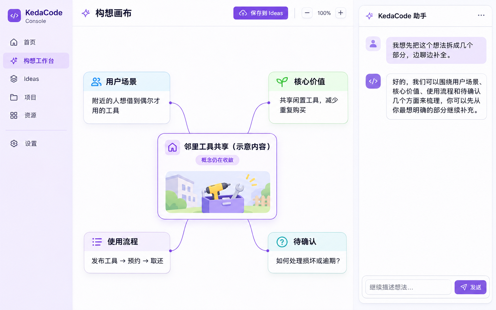
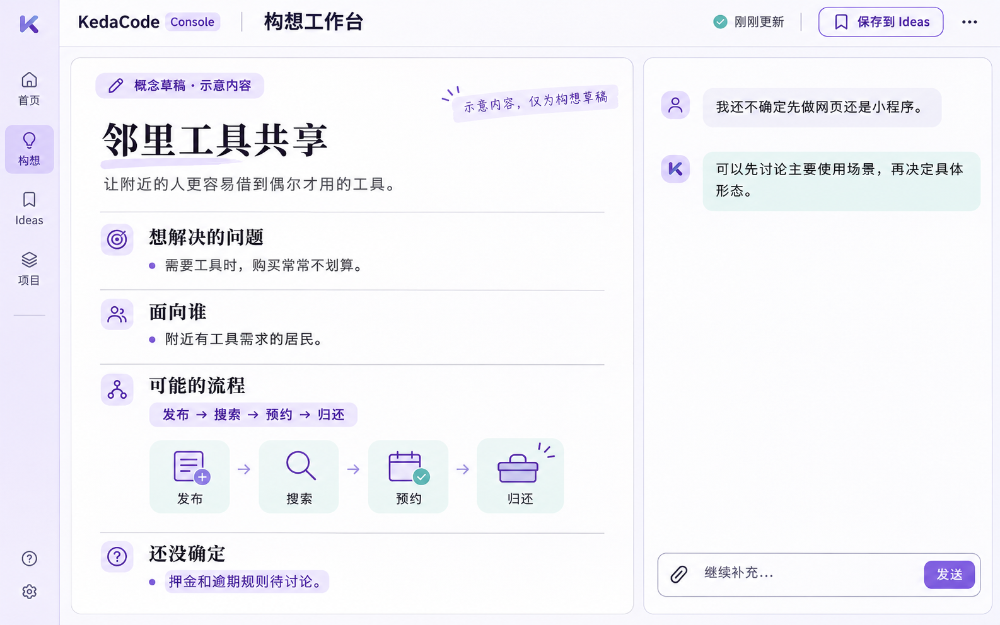
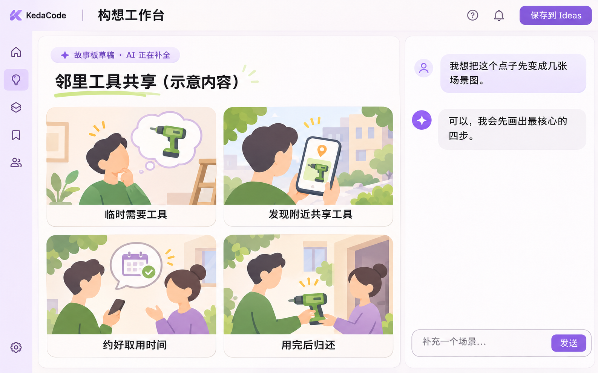
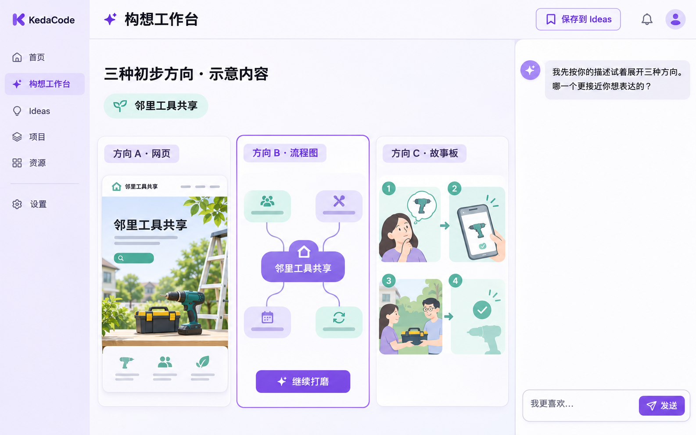
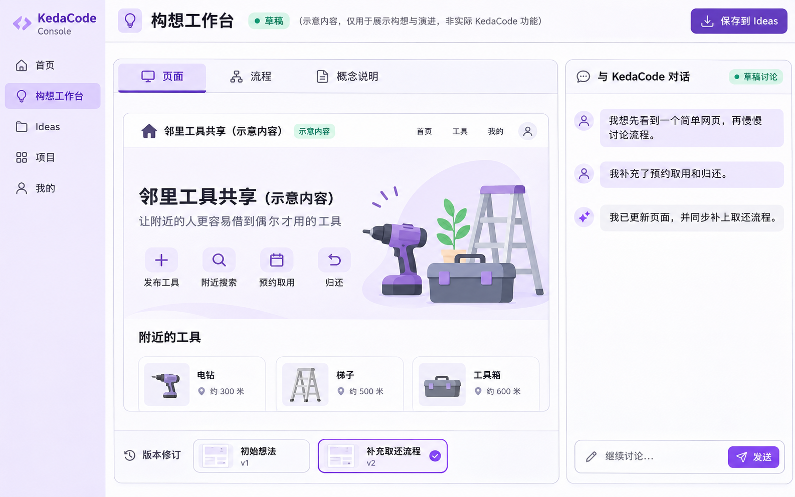

01
网页实时预览
左侧直接呈现 Agent 生成的网页，最容易感受到“边聊边看到结果”。
KedaCode · Design concepts
围绕“对话时同步生成、修改可见产物”的六张静态概念图。
设计概念 · ImageGen 静态图片，不可点击，不代表生产功能已实现。示例“邻里工具共享”仅用于说明画布内容。

左侧直接呈现 Agent 生成的网页，最容易感受到“边聊边看到结果”。

把用户、价值、流程和待确认项连起来，帮助发现想法中的缺口。

以接近 PRD 的方式持续整理内容，同时保留“未确认”状态。

用连续场景呈现用户体验，适合还没有明确界面或流程的想法。

一次给出几种表达方式，让用户选择更接近自己想法的一种继续打磨。

在页面、流程、说明之间切换，并回看对话推动的修改。